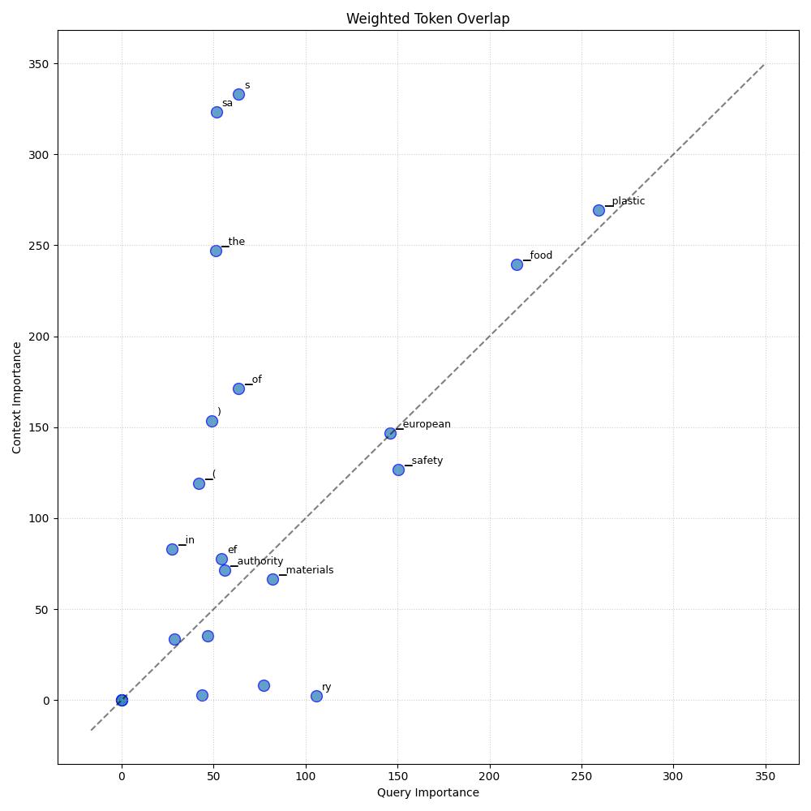
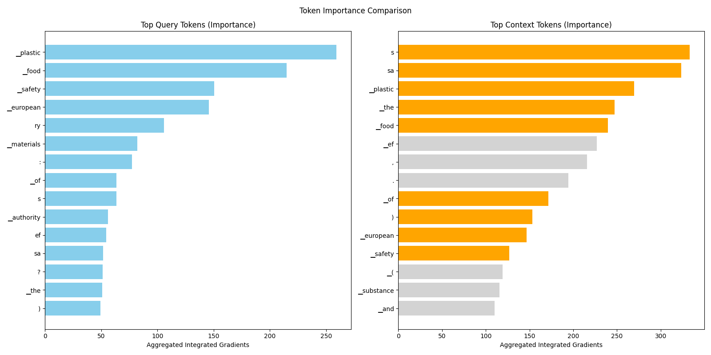

Analysis: query_114
Query: ▁query:▁What▁is▁the▁role▁of▁European▁Food▁Safety▁Authority▁(EFSA)▁in▁the▁restrictions▁for▁plastics▁materials?
Document Relevance

Weighted Overlap

Token Comparison

Documents
Document 1 (Click to Expand)
▁#▁EFSA▁guide▁on▁approval▁of▁substances▁in▁plastic▁FCMs▁On▁March▁22,▁2021,▁the▁European▁Food▁Safety▁Authority▁(EFSA)▁announced▁the▁publication▁of▁an▁administrative▁guide▁on▁how▁to▁submit▁applications▁for▁approval▁of▁substances▁“to▁be▁used▁in▁plastic▁and▁intended▁to▁come▁into▁contact▁with▁food.”▁The▁guide▁describes▁among▁others▁the▁“procedure▁and▁associated▁timelines▁for▁handling▁applications▁on▁substances▁to▁be▁used▁in▁plastic▁food▁contact▁materials,▁the▁different▁possibilities▁to▁interact▁with▁EFSA▁,▁and▁the▁support▁initiatives▁available▁from▁the▁preparation▁of▁the▁application▁(pre-submission▁phase)▁to▁the▁adoption▁and▁publication▁of▁EFSA’s▁scientific▁opinion.”▁This▁administrative▁guidance▁will▁be▁updated▁as▁needed▁to▁reflect▁relevant▁changes▁to▁the▁sectoral▁legislation▁and/or▁guidance▁documents.▁Read▁More▁EFSA▁(March▁22,▁2021).▁“▁Administrative▁guidance▁for▁the▁preparation▁of▁applications▁on▁substances▁to▁be▁used▁in▁plastic▁food▁contact▁materials▁”